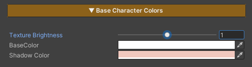

Base Character Colors
Base Character Colors Example 1
Base Character Colors Example 2

This section is used to adjust the character’s base color tones. It is designed to allow direct visual tuning through the material, without the need to repeatedly modify texture assets.
Parameters
- Texture Brightness : Adjusts the brightness of the main texture
- Base Color : Controls the overall color tone of the character
- Shadow Color : Adjusts the color and intensity of shadows to control the character’s mood and contrast
last_modified_at: %Y->-